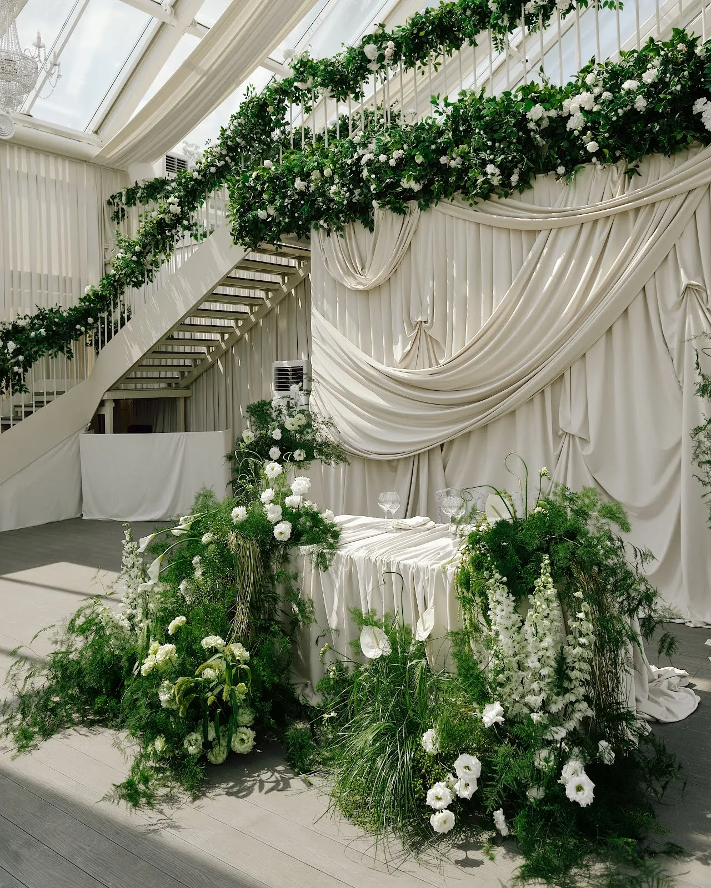
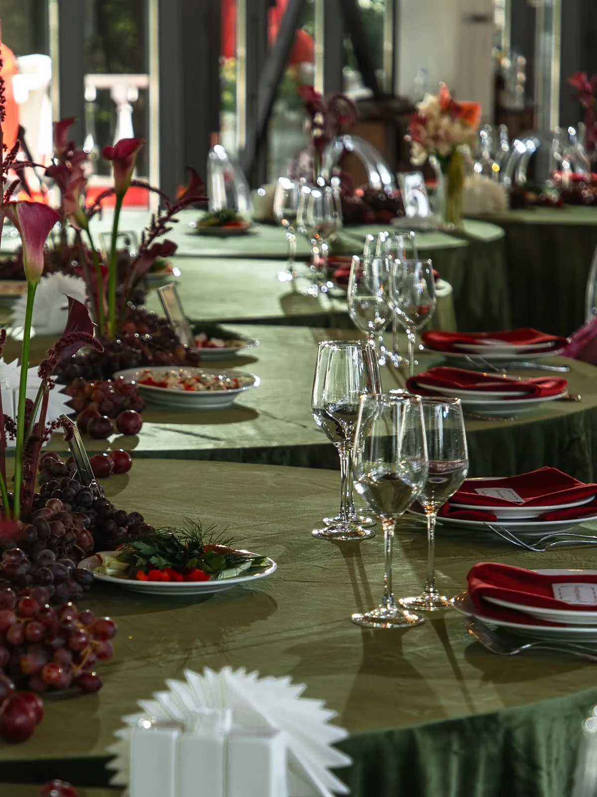
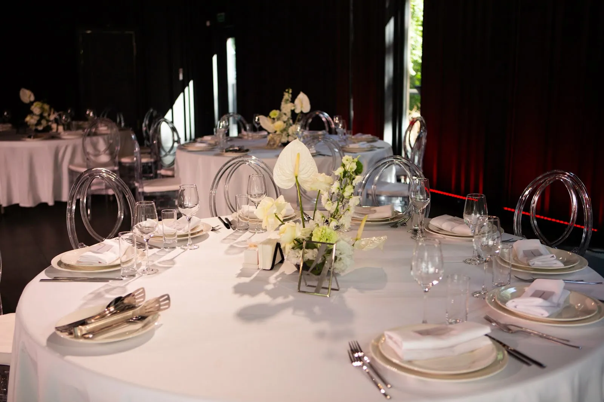
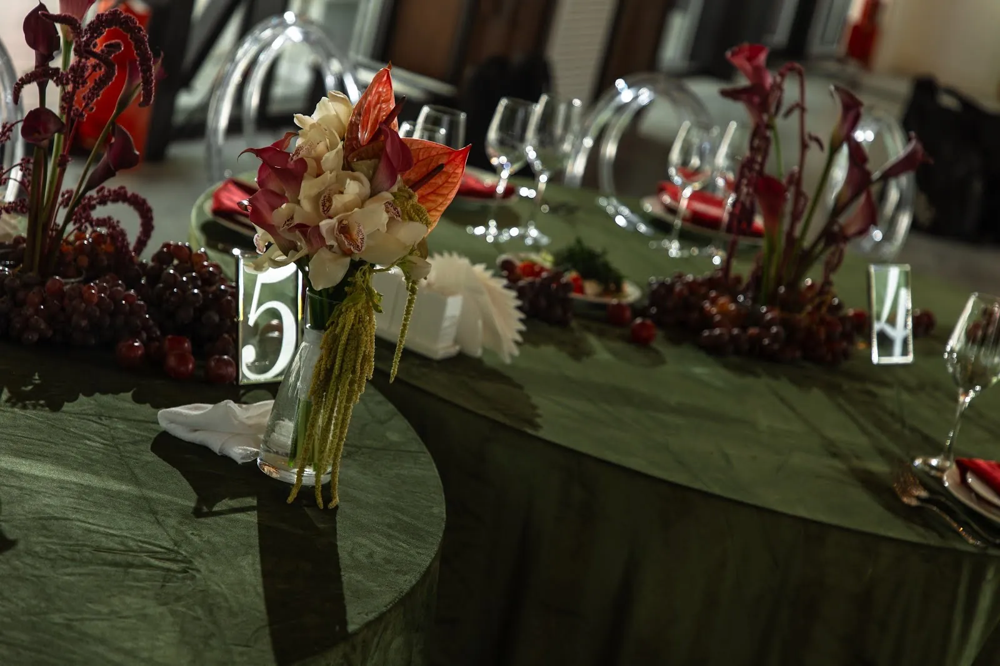
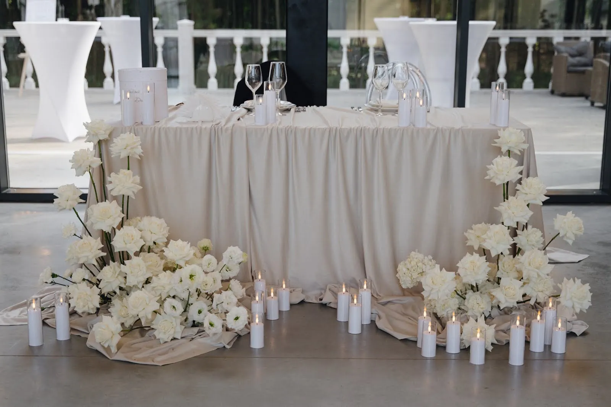

Оформление зала превращает банкетный зал в пространство вашей свадьбы. Но декор — это не «побольше цветов», а несколько продуманных зон, которые работают вместе: встреча гостей, столы, президиум, фотозона и свет. Разбираем, что оформляют, какие стили выбирают и из чего складывается смета.
Какие зоны оформляют
- Встреча гостей — welcome-зона, план рассадки, стол для подарков, входная группа.
- Президиум — стол молодожёнов: главная точка зала и фон для половины фотографий.
- Гостевые столы — центральные композиции, текстиль, свечи, полиграфия.
- Фотозона — отдельная локация для фото гостей.
- Церемония, если она проходит в зале или на площадке: арка, дорожка, стулья.
- Свет — подвесные композиции, свечи, тёплая подсветка. Свет меняет зал сильнее, чем цветы.

Популярные стили
Классика — белые и пудровые цветы, высокие композиции, свечи, хрусталь. Природный — зелень, полевые цветы, дерево, лён. Минимализм — мало элементов, много воздуха, акцент на свет и форму. Яркий — насыщенные цвета и смелые сочетания, подходит для вечеринок с характером.
Стиль выбирают от площадки: в зале с богатой лепниной уместна классика, в лофте — минимализм или природный декор. Декор не спорит с интерьером, а подхватывает его.

Флористика на столах
Композиции бывают низкие (гости видят друг друга через стол) и высокие (на подставках выше уровня глаз). На длинных столах хорошо работают гирлянды из зелени и цветов вдоль стола со свечами. Важно: композиции не должны мешать сервировке и разговору, а запах цветов — спорить с едой, поэтому сильно пахнущие сорта ставят аккуратно.


Из чего складывается стоимость
Смета на оформление зала зависит не от «пакета», а от состава работ:
- количество зон и столов;
- объём и сорта цветов (сезонность сильно влияет на цену);
- конструкции — арка, подвесные элементы, фотозона;
- аренда декора — подсвечники, вазы, текстиль, мебель;
- свет и свечи;
- монтаж, демонтаж и логистика, работа ночью или в узкое окно площадки.
Совет: держите в голове бюджет на декор целиком и распределяйте его по приоритетам — президиум и свет дают больше эффекта на фото, чем десяток мелких деталей.

Как подготовиться к встрече с декоратором
- Узнайте у площадки правила: время на монтаж, что можно крепить, разрешены ли живой огонь и подвесы.
- Соберите 10–15 референсов того, что нравится (и 2–3 того, что не нравится).
- Определите количество гостей, рассадку и бюджет на декор.
- Расскажите о вашей истории — лучшие концепции вырастают из неё, а не из картинок.
Мы оформляем свадьбы в Москве и Подмосковье — от камерного ужина до большого банкета. Расскажите о дате и площадке — предложим идею декора и посчитаем смету.
Частые вопросы
Сколько времени занимает монтаж декора в зале?
Зависит от объёма и правил площадки: от нескольких часов для камерной свадьбы до целого дня для сложных конструкций и подвесов.
Можно ли использовать декор площадки?
Да, многие площадки предоставляют базовый текстиль, посуду и мебель. Декоратор учитывает это и дополняет только то, что нужно.
Живые или искусственные цветы на свадьбу?
На свадьбе почти всегда используют живые цветы — они дают объём, запах и лучше смотрятся на фото. Искусственные элементы иногда применяют в конструкциях и подвесах.
Когда начинать обсуждать декор?
Обычно за 2–4 месяца до свадьбы, когда выбрана площадка и понятна концепция. На летние даты — раньше.